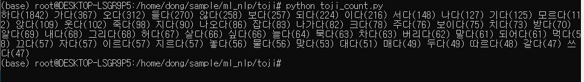
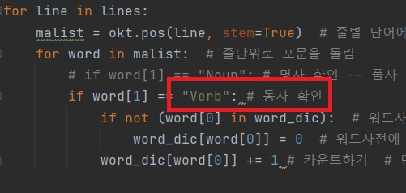
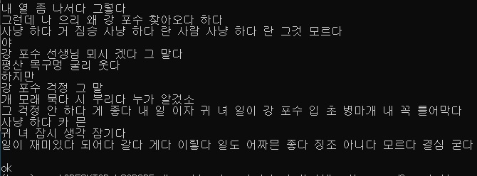
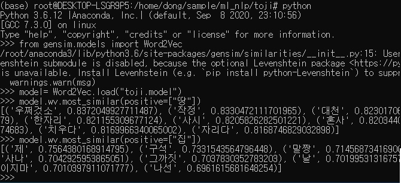
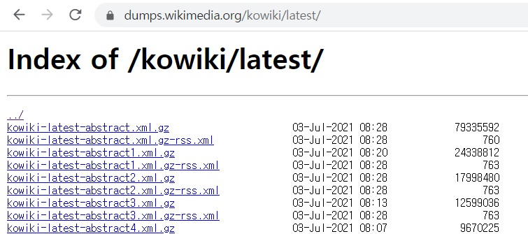
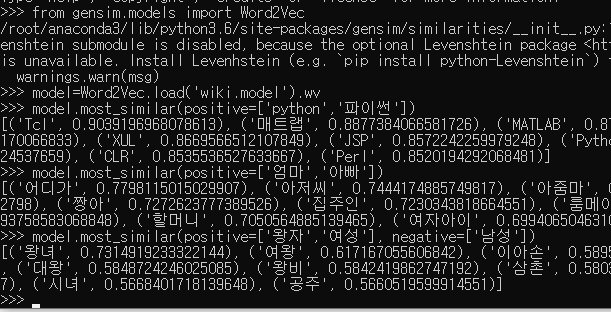
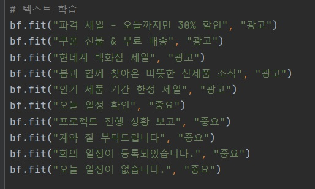
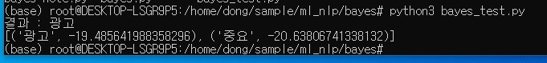

파이썬 자연어 처리
코드 :
깃허브 자연어 처리 레포지토리
1. 사용 라이브러리
소설 토지 분석 : konlpy, bs4, gensim(word2vec)단어 유사도 : konlpy, gensim(word2vec)
베이즈 정리 : bayes(BayesianFilter), konlpy
MLP 텍스트 분류 : keras, scikit-learn
N-gram 문장 유사도 : -
문장 생성하기 : keras, numpy, konlpy, bs4
챗봇 생성하기 : konlpy, bs4
2. 개발 환경
os : windows 10 Provirtual-env : Ubunto, anaconda3
language : python 3.6
IDE : pycharm
package : konlpy, bs4, gensim, bayes, keras, scikit-learn
3. 박경리 저자:토지 분석
문장 형태소 분석
단어 출현 빈도 분석

동사의 사용 빈도 확인 할 수 있다

붉은 상자 안의 내용을 수정하면 품사별로 빈도를 확인 할 수 있다.
word2vec 모델을 생성

토지 글을 사용해서 word2vec모델을 만들어 보았습니다.
bs4를 통해 body 안의 text의 내용만 처리하였고,
처리 결과를 toji.model로 저장하였습니다.
모델을 이용하여 근접한 단어를 찾아 보자

데이터가 적어 약간 이상하지만 거의 근접한 단어를 찾았다고 볼수 있다.
4. 단어 유사도
위키 피디아에서 데이터를 받아 단어 유사도를 확인하겠습니다.
위키피디아의 덤프 홈페이지에서 데이터를 받습니다.
konlpy의 Okt로 형태소 분석을 한 후 Word2Vec로 모델을 만듭니다.
만들어진 모델을 이용해 여러 단어를 입력해 유사한 언어를 확인해봅니다.

파이썬을 입력하면 다른 언어들이 나옵니다.
엄마, 아빠를 입력하면 아줌마, 아저씨 등이 나옵니다.
유사에 왕자, 여성을 제거에 남성을 입력하면 왕녀, 여왕 등이 나옵니다.
유사도 뿐만 아니라 특정 단어와 비슷한 단어를 제외한 유사 단어도 확인이 가능합니다.
5. 베이즈 정리
베이즈 정리는 조건부 확률과 관련된 이론입니다.조건부 확률은 A라는 사건이 일어 났을 경우에 B사건이 일어날 확률입니다.
즉, 주사위를 굴렸을때 처음에 6이 나오고 두번째에 3이 나올 확률과 같습니다.
6이 나올 확률은 1/6이고 다시 두번째 주사위를 굴렸을때 3이 나올 확률도 1/6입니다.
이 두 1/6이 함께 나와야 하기 때문에 (1/6) * (1/6) 이 조건부 확률로 나오게 됩니다.
간단하게 나이브 베이즈를 통한 분류를 하겠습니다.
깃허브의 bayes/bayes.py 의 코드로 나이브 베이즈 구조를 생성합니다.

위 그림처럼 간단하게 학습을 시키고 테스트 하겠습니다.


위 확률처럼 '광고'일 확률이 더 높게 나옵니다.